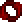

Очертание кровавой луны
Очертание кровавой луны (англ. Blood Moon's Semblance) — мощное оружие ближнего боя, атакующее врагов резким круговым ударом.
При атаке использует 2.5% от максимального здоровья игрока вплоть до 20%
Создание
Рецепты
| Результат | Ингредиенты | Рабочее место |
|---|---|---|
 Очертание кровавой луны
Очертание кровавой луны
|
 Смертельная коса (1)
Смертельная коса (1)
 Эссенция кровавой луны (10) |
 Мифриловая наковальня
Мифриловая наковальня
или  Орихалковая наковальня
Орихалковая наковальня
|
Примечания
- Не получает бонус от скорости атаки.
Интересные факты
- Оружие является отсылкой на "Очертания алой луны" — сигнатурное оружие Арлекино из Genshin Impact.